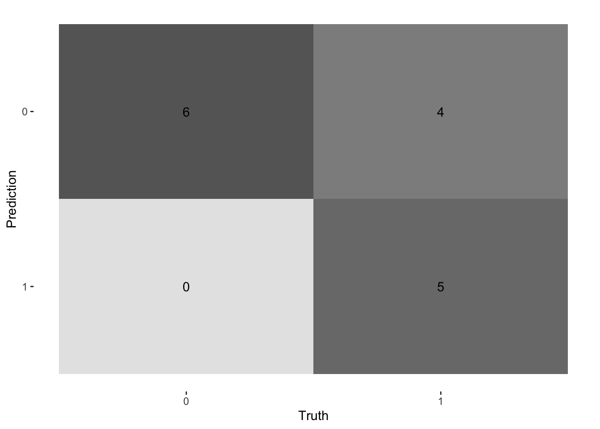

This is our predicted probabilities for each of the 10 samples (see that they are trying to make this sigmoid curve). They are coloured by their true diabetes label where (pos = 1 and neg = 0)
ggplot(prediction_pima, aes(x =glucose, y =prob, colour =diabetes))+geom_point(size =2, alpha =0.7)+geom_hline(yintercept =0.3, colour ="blue", linetype ="dashed")+geom_hline(yintercept =0.5, colour ="red", linetype ="dashed")+geom_hline(yintercept =0.7, colour ="purple", linetype ="dashed")+labs( x ="Glucose", y ="Predicted probability of diabetes", title ="Predicted probabilities with threshold lines")+theme_minimal()
Changing the decision threshold changes the type of mistakes the model makes.
A low threshold increases sensitivity (more positives detected).
A high threshold increases specificity (fewer false positives).
Checkout this graph for more insight to see what we mean by sensitivity and specificity
For the future, whenver youw nat to report the result of your classification model, we will need to understand how well it performs and so you will have to build a confusion matrix like the above shown. Instead of these tables, there are already curated packages to do so. We will go through it more in detail on Friday. But here is a snippet.
For instance, going back to prediction_pima if we want to report in a fianl confusion matrix our results with threshold = 0.7 we can do the following:
Confusion matrix using tidymodels
#Set as factors the required columns: prediction_pima$diabetes_dummy<-as.factor(prediction_pima$diabetes_dummy)prediction_pima$class_0.7<-as.factor(prediction_pima$class_0.7)data<-data.frame(actual =prediction_pima$diabetes_dummy, predicted =prediction_pima$class_0.7)cm<-data%>%conf_mat(truth =actual, estimate =predicted)cm
Truth
Prediction 0 1
0 6 4
1 0 5
autoplot(cm, type ="heatmap")#what other types are there?

:::{#quarto-navigation-envelope .hidden}
[Supervised Learning:Logistic Regression]{.hidden .quarto-markdown-envelope-contents render-id="cXVhcnRvLWludC1zaWRlYmFyLXRpdGxl"}
[HDS MSc - Module 3 - Supervised Learning - Classification - Logistic Reg]{.hidden .quarto-markdown-envelope-contents render-id="cXVhcnRvLWludC1uYXZiYXItdGl0bGU="}
[(1a) Fitting a logistic regression model - Python (scikit-learn)]{.hidden .quarto-markdown-envelope-contents render-id="cXVhcnRvLWludC1wcmV2"}
[(0) Unified Modelling Frameworks in R & Python]{.hidden .quarto-markdown-envelope-contents render-id="cXVhcnRvLWludC1zaWRlYmFyOi90aWR5bW9kZWxzX3NrbGVhcm5fb3ZlcnZpZXcuaHRtbCgwKS1VbmlmaWVkLU1vZGVsbGluZy1GcmFtZXdvcmtzLWluLVItJi1QeXRob24="}
[(1a) Fitting a logistic regression model - R (tidymodels)]{.hidden .quarto-markdown-envelope-contents render-id="cXVhcnRvLWludC1zaWRlYmFyOi9sb2dpc3RpY19yZWdyZXNzaW9uX3RpZHltb2RlbHMuaHRtbCgxYSktRml0dGluZy1hLWxvZ2lzdGljLXJlZ3Jlc3Npb24tbW9kZWwtLS1SLSh0aWR5bW9kZWxzKQ=="}
[(1a) Fitting a logistic regression model - Python (scikit-learn)]{.hidden .quarto-markdown-envelope-contents render-id="cXVhcnRvLWludC1zaWRlYmFyOi9sb2dpc3RpY19yZWdyZXNzaW9uX3B5dGhvbi5odG1sKDFhKS1GaXR0aW5nLWEtbG9naXN0aWMtcmVncmVzc2lvbi1tb2RlbC0tLVB5dGhvbi0oc2Npa2l0LWxlYXJuKQ=="}
[(2) Decision Threshold]{.hidden .quarto-markdown-envelope-contents render-id="cXVhcnRvLWludC1zaWRlYmFyOi9kZWNpc2lvbl90aHJlc2hvbGQuaHRtbCgyKS1EZWNpc2lvbi1UaHJlc2hvbGQ="}
[Supervised Learning:Logistic Regression]{.hidden .quarto-markdown-envelope-contents render-id="cXVhcnRvLWludC1uYXZiYXI6U3VwZXJ2aXNlZCBMZWFybmluZzpMb2dpc3RpYyBSZWdyZXNzaW9u"}
[/tidymodels_sklearn_overview.html]{.hidden .quarto-markdown-envelope-contents render-id="cXVhcnRvLWludC1uYXZiYXI6L3RpZHltb2RlbHNfc2tsZWFybl9vdmVydmlldy5odG1s"}
[(2) Decision Threshold]{.hidden .quarto-markdown-envelope-contents render-id="cXVhcnRvLWJyZWFkY3J1bWJzLSgyKS1EZWNpc2lvbi1UaHJlc2hvbGQ="}
:::{.hidden .quarto-markdown-envelope-contents render-id="Zm9vdGVyLWxlZnQ="}
Copyright 2025, Laura Bravo
:::
:::
:::{#quarto-meta-markdown .hidden}
[(2) Decision Threshold – HDS MSc - Module 3 - Supervised Learning - Classification - Logistic Reg]{.hidden .quarto-markdown-envelope-contents render-id="cXVhcnRvLW1ldGF0aXRsZQ=="}
[(2) Decision Threshold – HDS MSc - Module 3 - Supervised Learning - Classification - Logistic Reg]{.hidden .quarto-markdown-envelope-contents render-id="cXVhcnRvLXR3aXR0ZXJjYXJkdGl0bGU="}
[(2) Decision Threshold – HDS MSc - Module 3 - Supervised Learning - Classification - Logistic Reg]{.hidden .quarto-markdown-envelope-contents render-id="cXVhcnRvLW9nY2FyZHRpdGxl"}
[HDS MSc - Module 3 - Supervised Learning - Classification - Logistic Reg]{.hidden .quarto-markdown-envelope-contents render-id="cXVhcnRvLW1ldGFzaXRlbmFtZQ=="}
[]{.hidden .quarto-markdown-envelope-contents render-id="cXVhcnRvLXR3aXR0ZXJjYXJkZGVzYw=="}
[]{.hidden .quarto-markdown-envelope-contents render-id="cXVhcnRvLW9nY2FyZGRkZXNj"}
:::
<!-- -->
::: {.quarto-embedded-source-code}
```````````````````{.markdown shortcodes="false"}
---
title: "(2) Decision Threshold"
format: html
execute:
echo: true
message: false
---
## 1. Introduction
In logistic regression, the model outputs a **probability**:
\[
\hat{p}(x) = P(Y=1 \mid x)
\]
But to turn this probability into a **class prediction**, we must choose a:
# **Decision Threshold**
Typically:
- If \(\hat{p}(x) \ge 0.5\) → predict **1**
- If \(\hat{p}(x) < 0.5\) → predict **0**
But **0.5 is arbitrary**.
Changing the threshold changes:
- True Positives (TP)
- False Positives (FP)
- True Negatives (TN)
- False Negatives (FN)
We will explore this in detail later on too but lets get an idea:
---
## 2. Load and prepare the data
quarto-executable-code-5450563D
```r
library(mlbench)
library(tidyverse)
library(tidymodels)
data("PimaIndiansDiabetes")
pima <- PimaIndiansDiabetes %>%
select(glucose, diabetes) %>%
mutate(
diabetes = fct_relevel(diabetes, "pos"),
diabetes_dummy = if_else(diabetes == "pos", 1, 0)
)
3. Fit a logistic regression model using tidymodels
quarto-executable-code-5450563D
log_spec<-logistic_reg(mode ="classification")%>%set_engine("glm")log_fit<-log_spec%>%fit(diabetes~glucose, data =pima)tidy(log_fit)
4. Add predicted probabilities
Lets make it easier to understand and just predict diabetes for the 15 first samples of our dataset
quarto-executable-code-5450563D
prediction_pima<-predict(log_fit, new_data =pima[1:15,], type ="prob")%>%rename(prob =.pred_pos)%>%dplyr::bind_cols(pima[1:15,])head(pima)
5. Create predicted classes for different thresholds
Then we want to assess how our final prediction changes based on the threshold we use
This is our predicted probabilities for each of the 10 samples (see that they are trying to make this sigmoid curve). They are coloured by their true diabetes label where (pos = 1 and neg = 0)
quarto-executable-code-5450563D
ggplot(prediction_pima, aes(x =glucose, y =prob, colour =diabetes))+geom_point(size =2, alpha =0.7)+geom_hline(yintercept =0.3, colour ="blue", linetype ="dashed")+geom_hline(yintercept =0.5, colour ="red", linetype ="dashed")+geom_hline(yintercept =0.7, colour ="purple", linetype ="dashed")+labs( x ="Glucose", y ="Predicted probability of diabetes", title ="Predicted probabilities with threshold lines")+theme_minimal()
Changing the decision threshold changes the type of mistakes the model makes.
A low threshold increases sensitivity (more positives detected).
A high threshold increases specificity (fewer false positives).
Checkout this graph for more insight to see what we mean by sensitivity and specificity
For the future, whenver youw nat to report the result of your classification model, we will need to understand how well it performs and so you will have to build a confusion matrix like the above shown. Instead of these tables, there are already curated packages to do so. We will go through it more in detail on Friday. But here is a snippet.
For instance, going back to prediction_pima if we want to report in a fianl confusion matrix our results with threshold = 0.7 we can do the following:
Confusion matrix using tidymodels
quarto-executable-code-5450563D
#Set as factors the required columns: prediction_pima$diabetes_dummy<-as.factor(prediction_pima$diabetes_dummy)prediction_pima$class_0.7<-as.factor(prediction_pima$class_0.7)data<-data.frame(actual =prediction_pima$diabetes_dummy, predicted =prediction_pima$class_0.7)cm<-data%>%conf_mat(truth =actual, estimate =predicted)cm
quarto-executable-code-5450563D
autoplot(cm, type ="heatmap")#what other types are there?